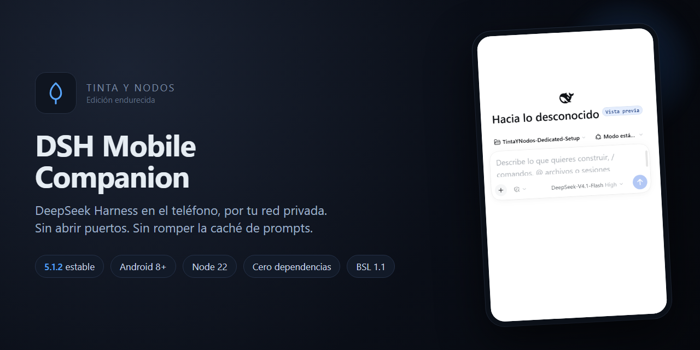
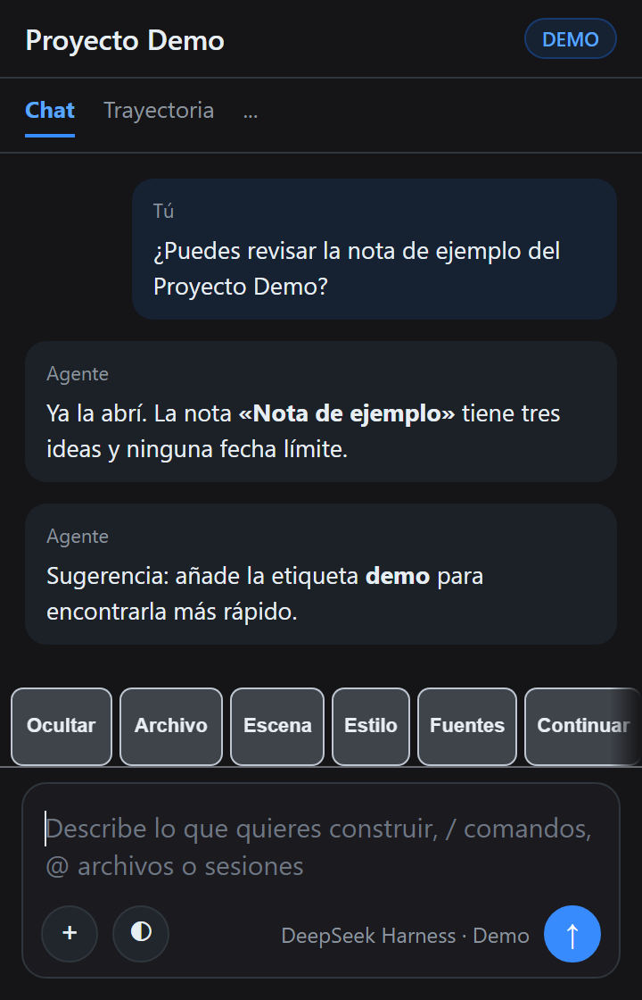
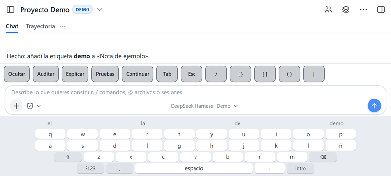

DeepSeek Harness en tu teléfono, dentro de tu red privada
DSH Mobile Companion es una app Android y un puente local que te dejan controlar el agente de tu computadora desde el móvil sin nube, sin cuenta y sin exponer nada a Internet. El teléfono habla con tu PC por ZeroTier o Tailscale; el agente sigue corriendo donde siempre.

Qué es y qué no es
Es un mando remoto para DeepSeek Harness: abre el chat de tu PC desde el teléfono, inserta comandos rápidos, muestra teclas de código, envía notas y te avisa de los turnos del agente.
No es un modelo de IA en el teléfono, ni un servicio en la nube, ni un cliente oficial de DeepSeek. No guarda tu clave de API y no funciona con la computadora apagada.
Cómo funciona
- Ejecutas el puente en la computadora: un proceso Node sin dependencias que habla con Harness y atiende al teléfono solo por loopback y por tu interfaz de VPN.
- El teléfono se conecta a la misma red privada y abre la app.
- Apruebas el dispositivo una vez desde el panel local de la PC; la app recuerda la cookie del dispositivo.
- A partir de ahí controlas el chat, los comandos y las notas desde el móvil.
Funciones
Chat completo
El compositor real de Harness, adaptado a pantalla de teléfono y a apaisado con teclado.
Comandos rápidos
Catálogo por perfil (escritura o código), con interruptores y descripción en Ajustes.
Teclas de código
Tab, Esc, llaves, corchetes, paréntesis y símbolos, sin cambiar de teclado.
Notas al teléfono
Escribe sin conexión y envía la nota a la computadora cuando vuelva.
Sin dependencias
Puente Node sin paquetes npm y APK sin AndroidX ni Kotlin: menos superficie, menos fallos.
Actualización verificada
El APK se comprueba por SHA-256 y se instala con la misma firma de release.
Comparación honesta
| Opción | Ventaja | Límite |
|---|---|---|
| DSH Mobile Companion | Chat y comandos en el móvil, sin nube, dentro de tu VPN | Solo Android, una PC activa, requiere VPN y puente |
| Usar Harness en el navegador del móvil | Cero instalación | Sin comandos rápidos ni teclas, incómodo en apaisado |
| Escritorio remoto | Ves toda la PC | Pesado, táctil incómodo y expone más superficie |
Instalar
- Descarga el APK de GitHub Releases e instálalo (Android pedirá permitir instalación desde el navegador).
- En la PC, arranca el puente y el panel local. Anota la dirección que muestra:
http://IP-PRIVADA:57420. - Conecta el teléfono a la misma VPN privada.
- Abre la app, añade la PC con esa dirección y pulsa «Solicitar acceso».
- Aprueba el dispositivo en el panel de la computadora. La app entra sola.
Capturas



Preguntas frecuentes
¿Qué es DSH Mobile Companion?
Una app Android y un puente local que conectan tu teléfono con DeepSeek Harness a través de tu red privada. No es un cliente en la nube ni guarda tu clave de API.
¿Necesito cuenta o suscripción?
No. No hay cuentas ni servidores intermedios: el teléfono habla directo con tu computadora. El software es gratuito bajo licencia BUSL-1.1.
¿Se expone mi computadora a Internet?
No. El puente escucha solo en loopback y en la interfaz de tu VPN privada. No hay reenvío de puertos ni Cloudflare.
¿Funciona sin la computadora encendida?
No para conversar con el agente. Sí para escribir notas y enviarlas cuando la PC vuelva.
¿Necesito Android moderno?
Android 8.0 (API 26) o superior, sin servicios de Google en segundo plano.
¿Es oficial de DeepSeek?
No: es un cliente independiente de Tinta y Nodos. Requiere que instales DeepSeek Harness en tu PC.
¿Es seguro?
El tráfico va en HTTP dentro de tu VPN privada, cifrado por el túnel. Además: APK verificado por SHA-256, aprobación local del dispositivo, kill switch y rotación de clave.
¿Hay versión iOS o de escritorio?
La serie 5 es solo Android. Una app de escritorio y otros clientes son líneas separadas, aún no disponibles.
¿Qué límites tiene?
Una computadora activa a la vez, requiere VPN levantada y depende de Harness en la PC. No ejecuta tareas sin la computadora.
¿Dónde reporto un fallo o una vulnerabilidad?
Fallas por GitHub Issues con la plantilla de error; vulnerabilidades en privado según SECURITY.md.